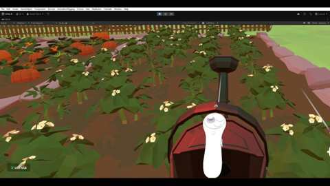

Quest for Everyday Heroes
A research-focused VR role-playing game designed to let children with Autism Spectrum Disorder practise everyday routines and communication through guided activities in familiar settings.
Gameplay
The experience follows a child through three settings: home, school and a farm. Activities include getting ready in the morning, choosing whether to have breakfast, completing a maths quiz, practising archery, carrying a basketball, delivering baskets and watering plants.

My contribution
I led the project from research planning and game concept through design, development, testing and analysis. I built the gameplay and interaction systems, including object grabbing, A-button conversations with non-player characters, and adaptive difficulty for the maths quiz. Archery uses a hand-held bow and manually selected arrows; plant watering uses a tilting watering can.
Movement and platform
The game uses smooth joystick movement and snap turning, with no player-controlled teleportation. I built the VR experience in Unity using XR Origin and the XR interaction setup for Meta Quest 3.
Gameplay trailer
The GitHub repository links a separate 2D animated concept trailer.